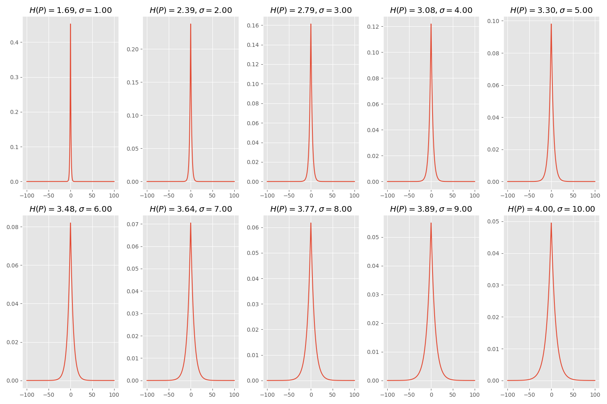
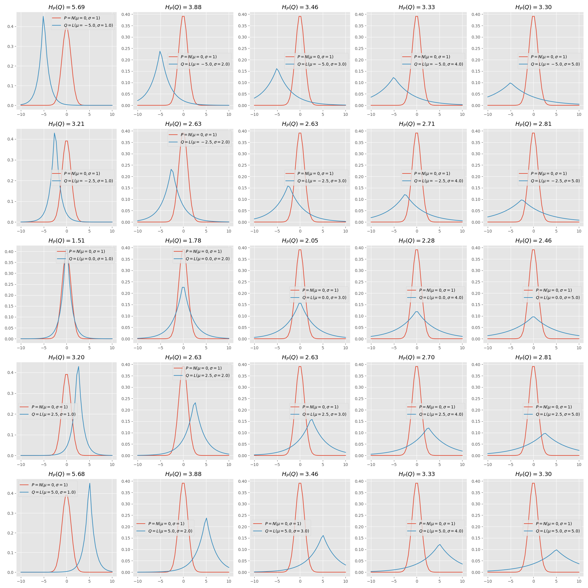
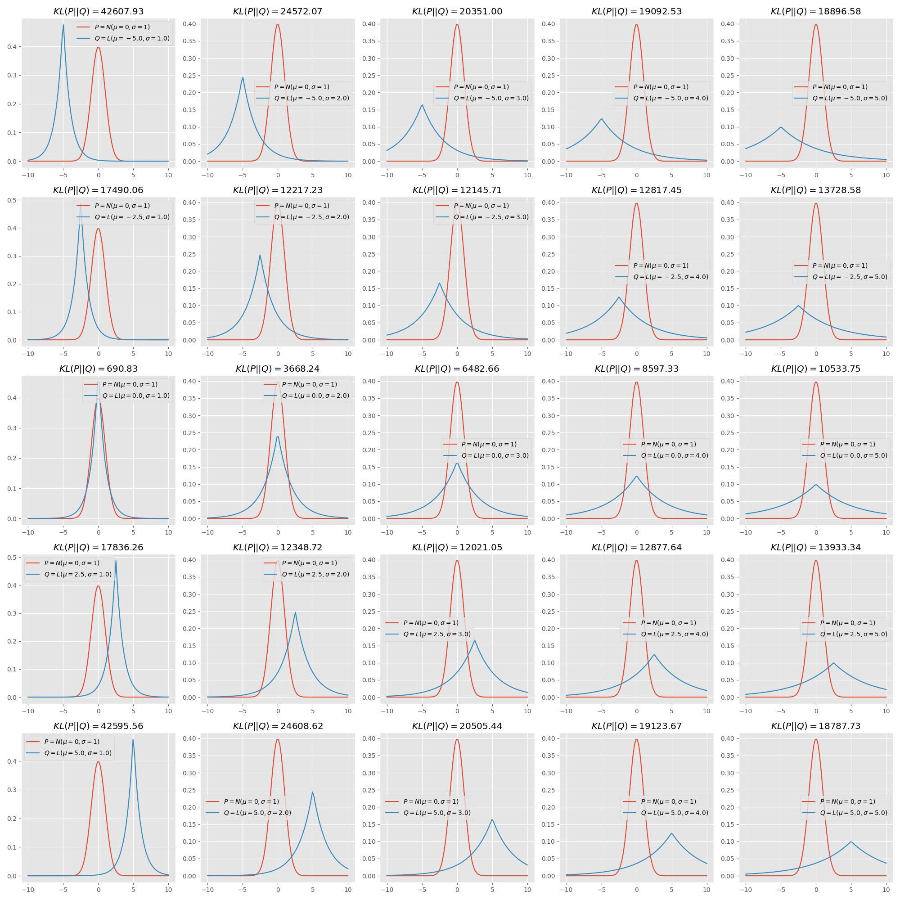
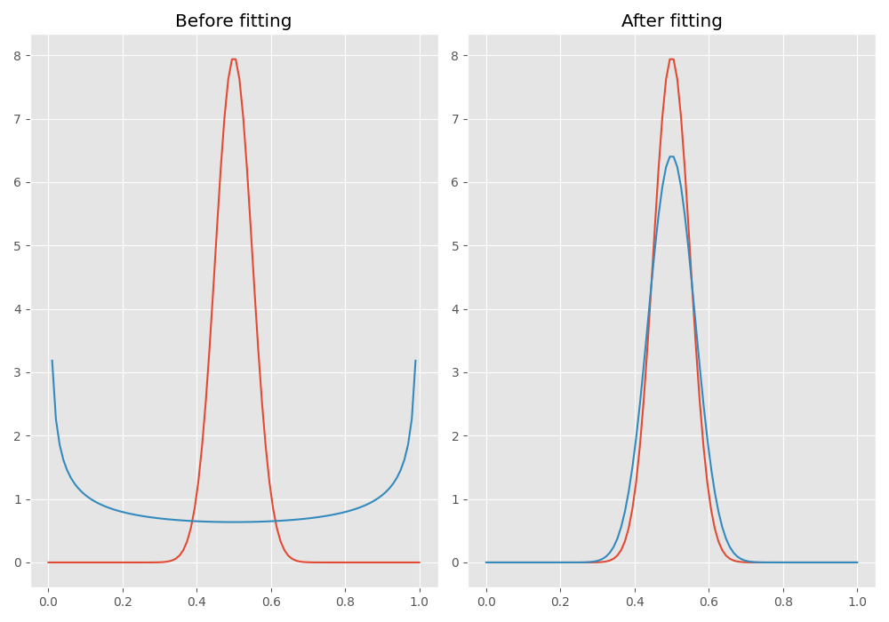

LAB 03.02.02 - Similarity and Entropy
Contents
# init repo notebook
!git clone https://github.com/rramosp/ppdl.git > /dev/null 2> /dev/null
!mv -n ppdl/content/init.py ppdl/content/local . 2> /dev/null
!pip install -r ppdl/content/requirements.txt > /dev/null
LAB 03.02.02 - Similarity and Entropy¶
In this laboratory we’ll review some commonly used entropy functions and how to interpret them.
import inspect
from rlxmoocapi import submit, session
course_id = "ppdl.v1"
endpoint = "https://m5knaekxo6.execute-api.us-west-2.amazonaws.com/dev-v0001/rlxmooc"
lab = "L03.02.02"
Log-in with your username and password:
session.LoginSequence(
endpoint=endpoint,
course_id=course_id,
lab_id=lab,
varname="student"
);
from scipy.stats import rv_continuous
from scipy import stats
import numpy as np
import matplotlib.pyplot as plt
plt.style.use("ggplot")
Task 1¶
Compute the entropy of a continuous distribution by solving the following integral:
To this end, you must do the following numerical approximation to compute the integral:
Your function will receive the following arguments:
dist: ascipydistribution.min_x: minimum range value to compute the integral.max_x: maximum range value to compute the integral.n_points: number of points in the grid to compute the integral.
def continous_entropy(
dist: rv_continuous,
min_x: float,
max_x: float,
n_points: int
) -> float:
...
For a normal distribution, We have an analytical solution for the entropy:
Therefore, your function must return a similar value.
def continous_entropy_normal(std: float) -> float:
return 0.5 * (np.log(2 * np.pi * std ** 2) + 1)
You may change the std value to verify that both results are equivalent:
std = 2
dist = stats.norm(loc=0, scale=std)
numerical = continous_entropy(dist, -100, 100, 1000) # type: ignore
analytical = continous_entropy_normal(std)
print(f"Numerical approximation: {numerical}")
print(f"Analytical solution: {analytical}")
Now, we will use another distribution to evaluate the entropy at different levels.
Your result must be the same to the following figure:

As you can see, the entropy measures the level of information of the distribution. If the distribution is too informative (converges to a point) there’s less entropy, and if the distribution is less informative (several points are more likely) then there’s higher entropy.
scale = np.linspace(1, 10, 10)
loc = 0
min_x, max_x = -100, 100
n_points = 1000
*entropies, = map(
lambda scale: continous_entropy(
stats.laplace(loc=loc, scale=scale),
min_x=min_x,
max_x=max_x,
n_points=n_points
),
scale
)
fig, ax = plt.subplots(2, 5, figsize=(15, 10))
cont = 0
x_range = np.linspace(min_x, max_x, n_points)
for i in range(2):
for j in range(5):
axi = ax[i, j]
axi.plot(
x_range,
stats.laplace(loc=loc, scale=scale[cont]).pdf(x_range)
)
axi.set_title(f"$H(P)={entropies[cont]:.2f}, \\sigma={scale[cont]:.2f}$")
cont += 1
fig.tight_layout()
Use the following cell to evaluate your code:
student.submit_task(namespace=globals(), task_id="T1");
Task 2¶
In this task you must compute the continuous cross-entropy of two continuous distributions \(p\) and \(q\):
However, you must compute this using a monte carlo approximation:
def cross_entropy(
p: rv_continuous,
q: rv_continuous,
n_samples: int
) -> float:
...
In the following figure you can see a comparison between a standard normal distribution and different laplacian distributions.
The result must be as follows:

fig, ax = plt.subplots(5, 5, figsize=(20, 20))
locs = np.linspace(-5, 5, 5)
scales = np.linspace(1, 5, 5)
p = stats.norm(loc=0, scale=1)
x_range = np.linspace(-10, 10)
for i in range(5):
for j in range(5):
axi = ax[i, j]
q = stats.laplace(loc=locs[i], scale=scales[j])
ce = cross_entropy(p, q, 10_000)
axi.plot(x_range, p.pdf(x_range), label="$P=N(\\mu=0, \\sigma=1)$")
axi.plot(x_range, q.pdf(x_range), label=f"$Q=L(\\mu={locs[i]}, \\sigma={scales[j]})$")
axi.set_title(f"$H_P(Q) = {ce:.2f}$")
axi.legend()
fig.tight_layout()
Use the following cell to evaluate your code:
student.submit_task(namespace=globals(), task_id="T2");
Task 3¶
In this task, you must compute the Kullback-Leibler (KL) divergence between two distributions \(P\) and \(Q\), as follows:
You must also, perform a numerical approximation using monte carlo:
def kl_divergence(
p: rv_continuous,
q: rv_continuous,
n_samples: int
) -> float:
...
Now, we’ll compute the KL between a standard normal distribution and different Laplace distributions.
If you run the following cell you must obtain an image similar to the next one:

fig, ax = plt.subplots(5, 5, figsize=(20, 20))
locs = np.linspace(-5, 5, 5)
scales = np.linspace(1, 5, 5)
n_samples = 10000
x_range = np.linspace(-10, 10, 100)
p = stats.norm(loc=0, scale=1)
for i in range(5):
for j in range(5):
axi = ax[i, j]
q = stats.laplace(loc=locs[i], scale=scales[j])
kl = kl_divergence(p, q, n_samples)
axi.plot(x_range, p.pdf(x_range), label="$P=N(\\mu=0, \\sigma=1)$")
axi.plot(x_range, q.pdf(x_range), label=f"$Q=L(\\mu={locs[i]}, \\sigma={scales[j]})$")
axi.set_title(f"$KL(P||Q) = {kl:.2f}$")
axi.legend()
fig.tight_layout()
Use the following cell to evaluate your code:
student.submit_task(namespace=globals(), task_id="T3");
Task 4¶
In this final task, you’ll fit a distribution using the KL-divergence. In this problem you must fit the parameters of a beta distribution so that it’s similar to any given distribution.
The following function takes as arguments the target distribution p, the initial beta parameters params0, and the number of samples n_samples used in the montecarlo approximation for the KL. You must return a scipy beta distribution with the best parameters.
You must implement a hill-climbing approach, as follows:
You receive an initial set of parameters
params0.For a given number of iterations
n_itersyou must do:Create a new set of parameters
params1using the following rule (adding a number generated using a normal distribution to the previous parameters):params1 = params0 + N(mu=0, sigma=step_size)Compute the KL divergence between
pand a beta distribution with the proposed parametersIf the KL is lower with the new parameters, you must replace
params0withparams1
def fit_beta(
p: rv_continuous,
params0: np.ndarray,
step_size: float,
n_iters: int,
n_samples: int
) -> rv_continuous:
for i in range(n_iters):
params1 = ...
q_old = ...
q_new = ...
if (
kl_divergence(p, q_new, n_samples) <
kl_divergence(p, q_old, n_samples)
):
params0 = params1
return stats.beta(a=params0[0], b=params0[1])
p = stats.norm(loc=0.5, scale=0.05)
dist = fit_beta(
p=p, params0=np.array([0.5, 0.5]),
step_size=0.05, n_iters=10_000,
n_samples=10_000
)
If you run the next cell, you will see a comparison of the \(P\) and \(Q\) distributions before and after fitting with the KL divergence. Your result must look as follows:

x_range = np.linspace(0, 1, 100)
dist0 = stats.beta(0.5, 0.5)
fig, ax = plt.subplots(1, 2, figsize=(10, 7))
ax[0].plot(x_range, p.pdf(x_range), label="$P(x)$")
ax[0].plot(x_range, dist0.pdf(x_range), label="$Q(x)$")
ax[0].set_title("Before fitting")
ax[1].plot(x_range, p.pdf(x_range), label="$P(x)$")
ax[1].plot(x_range, dist.pdf(x_range), label="$Q(x)$")
ax[1].set_title("After fitting")
fig.tight_layout()
Use the following cell to evaluate your code:
student.submit_task(namespace=globals(), task_id="T4");